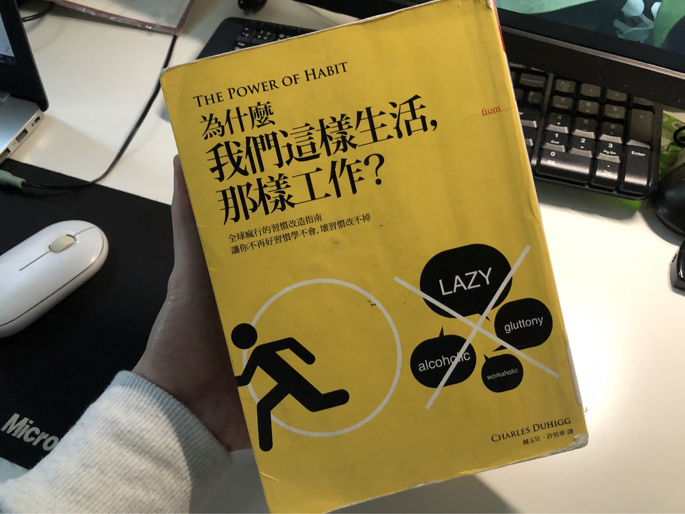

紀念一下今天把這本書看完了。
做個紀念

另外也做個簡短的筆記，讓自己以後想改變習慣時可以參考。
找出慣行行為
日常生活中可能有很多慣性動作，例如說「下午離開桌子到咖啡店買一片巧克力餅乾，接著和朋友聊天的時候把餅乾吃掉」。
找出被滿足的慾望是什麼？
找出慾望的方式是：做點實驗
以上面的例子可以這樣做：
- 第一天，不要跑去咖啡館，而是去附近走一走，不要吃任何東西就回到桌前
- 第二天，走到咖啡館買一個甜甜圈或巧克力棒，然後回到桌前吃
- 第三天，走到超市買一顆蘋果，然後一邊跟朋友聊天，一邊吃下去。
- 第四天，不要去咖啡館，嘗試改喝咖啡，然後回到辦公室跟朋友閒聊幾分鐘，最後回到自己的桌前。
這些是用來測試究竟是什麼驅使了慣行行為。
如果是餅乾？那是因為餓嗎？如果是的話，那蘋果應該也可以滿足這個慾望。或者想打起精神？那咖啡應該也可以滿足。
另外，在嘗試這些不同獎勵時，完成活動回到桌前的時候，可以拿一張紙寫下你當時腦海中想到的三件事。這樣做的意義是 強迫自己意識到自己在想什麼？
接著，15 分鐘後你可以問自己「還想吃餅乾嗎？」。如果是，那就代表渴望糖分不是引發這個習慣的洞悉。或是與同事閒聊完後，你還是想吃餅乾，那就代表與人交流不是驅使你行為的東西。
篩選提示
因為生活周遭有太多的雜訊，所以你可以試著篩選出「你想要專注的幾個提示」，在做出某個慣行行為時的：
- 地點
- 時間
- 情緒狀態
- 其他人
- 做習慣動作之前的行為
如果在做出某個慣行行為時，哪一個項目經常出現，那很有可能那就是觸發這個行為的「提示」
立下計畫
以上面的例子為例：
- 提示：時間在下午三點半左右
- 慣行行為：走到咖啡館、買餅乾、跟朋友聊天
- 獎勵：透過實驗發現結果是，短暫的休息與社交機會
所以計劃就會是：每到下午三點半時，我要走到朋友桌邊聊天十分鐘
這份計畫絕對不會一開始就執行的很順利，但當你逐漸把這個「新的習慣」養成時，你自然就會不自覺的去做這件事，而不用再有「刻意去做」的感覺。